APIS
Una API (Application Programming Interface) es una interfaz que permite a los programas o servicios informáticos comunicarse entre sí o realizar una función, basicamete su funcionamieto se resume a recibir un dato, procesarlo y arojar un resultado esto sin la necesidad de comprender o manipular los procesos internos que se ralizan es esta.
Las API se pueden aplicar o crear para cualquier tarea, desde comunicar dos paguinas web (API Rest) hasta crear nuevas funciones en un lenguaje, de hecho muchas de las funcionalidades que ofrece JavaScrip son definidas como "APIS" interas del lenguaje.
Existen muchos tipos de "apis" para multitud de usos, las más utilizadas en JavaScrip a un nivel basico son:
Objeto Date
Se trata de una función nativa de JavaScrip la cual cuenta con multiples metodos para trabajar con la fecha y la sona horaria de la paguina.
Su uso más basico se trata de obtener la fecha actual del dispositivo para esto simplemte es necesario utilizar la palabra clave "Date" expresada como una función
Ejemplo
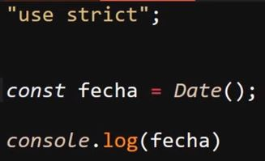
Resultado
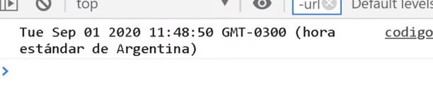
Date() como Constructor
Una particularidad de la función "Date" es que esta tambien se trata de un constructor, esto ya que hereda tanto sus metodos particulares como los prototipos de objeto, por lo cual en ocaciones se le llama objeto "Date".
Esto se Comprueba al utilizar "Date" para generar un ojeto:
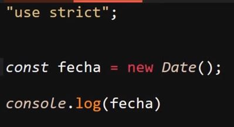
Con este codigo se obtiene un resultado en consola que aparenta ser igual al del ejemplo anterior, pero con la diferencia de que este no es solo el resultado de la función, en su lugar se trata de un objeto con todas sus metodos y propiedades
Para manipular o obtener la fecha de una forma en particular se utilizan los diferentes metodos del objeto "Date", los cuales son:
-
GetDate( ): Este metodo retorna el día del mes actual, por ejemplo si la fecha es "22/10/23" este metodo retorna "22"
Ejemplo
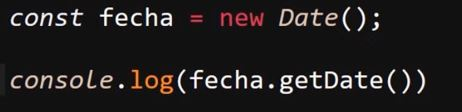
-
GetDay( ): Este metodo retorna el día de la semana actual, es importante tener en cuenta que este metodo trabaja con arrays por lo tanto el primer día de la semnana el cual es el domingo tiene el indice "0", el lunes el indice "1" y así sucesibamente
Por ejemplo si la fecha es "jueves" este metodo retornara "4"
Ejemplo
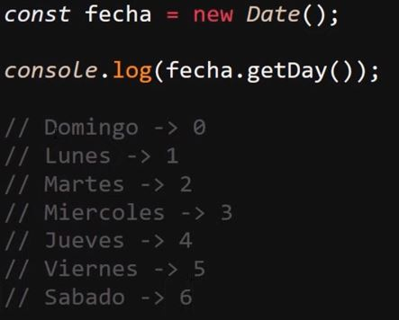
-
GetMonth( ): Este metodo retorna el mes actual, y trabajaa de la misma forma que el metodo anterior, es decir trabaja con arrays, por lo tanto Enero tiene el indice "0", por lo tanto febrero tiene el indice "1" y así sucesibamente.
Ejemplo
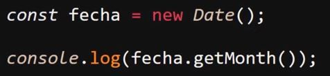
-
GetYear( ): Este metodo retorna el año actual sin embargo lo hace con una particularidad, y esta es que al año la "api" le resta 1900, por lo tanto si el año actual es "2023" el resultado sera "123", lo ideal para obtener el año actual en sí es sumarle 1900 al metodo, de ese modo se equipara las fechas y se obtiene el año exacto.
Ejemplo
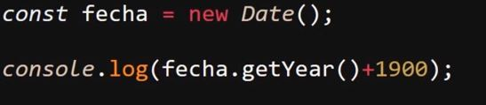
-
GetHours( ): Este metodo retorna la hora actual del dispositivo:
Ejemplo
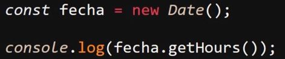
-
GetMinutes( ): Este metodo retorna los minutos actuales del dispositivo:
Ejemplo
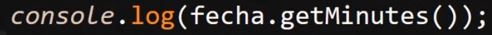
-
GetSeconds( ): Este metodo retorna el segundo en el que se cargo la paguina, por lo tanto para elaborar un relog es necesario elaborar un codigo que actualise la ejecución de este metodo:
Ejemplo
Estos son los metodos más basicos del objeto "Date" pero en realidad este posee multitud más de estos así como parametros o otras funcionalidades como el recibir parametros todo esto y mas se enceutra en El apartado de Modzilla sobre el objto "Date".
Los parametros más comunes que se le suelen suministrar a este objeto son fechas particulares de ese modo estos datos remplazara el resultado de los metodos ya descritos, de esa manera se puede utilizar el objeto "Date" para plasmar una fecha en espesifico en ves de la actual.
LocalStorage y SessionStorage
Ambas se tratan de "APIS" para el almacenamiento de datos en el naveador, la diferencia entre ellas radica en que "localStorage" es un almacenamiento permanenete,sin importar si se actualisa la paguina, o se cierra el navegador esos datos permaneseran guardados en "localStorage", por otra parte "sessionStorage" se trata de un almacenamiento volatil es decir que al actualizar la pestaña o cerrar el navegador la información se pierde.
Ambas "APIS" funcionana basicamente igual, de hecho poseen los mismos metodos, para minipular los datos:
-
Para guardar un dato en estas "apis" se usa el metodo ".setItem( )", para ingresar datos se requiere un nombre de "key" y el dato a almacenar, la "key" funciona como un identificador para el dato, en otras palabras el almacenage de en "storage" requiere cadenas nombre/valor:
LocalStorage
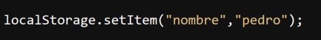
SessionStorage
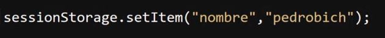
-
Para Obtener un dato desde "localStorage" o "sessionStorage" se usa el metodo ".getItem( )", este metodo unicamete requiere que se le espesifique el nombre de la "key" para poder seleccionar el dato indicado:
LocalStorage
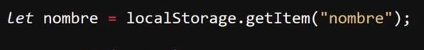
SessionStorage
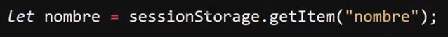
-
Para eliminar un dato de estas "api" se usa la función "removeItem( )", del mismo modo que "getItem( )" esta función solo requiere el nombre de la key que identifica el dato para ubicarlo, con la diferencia de que no lo obtiene si no que lo elimina
LocalStorage
Nota: En el caso de "localStorage" el dato no se eliminara hasta que se le indique.
SessionStorage
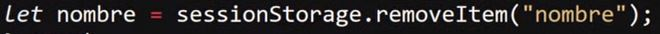
Nota: En el caso de "sessionStorage" el dato se eliminara si se recarga la paguina o si se cierra el navegador.
-
Para eliminar todos los datos almacenados en estas "api" se usa el metodo "clear( ), este metodo no requiere de ningun parametro, simplemente elimina todos los datos guardados en "localStorage" y en "sessionStorage"
LocalStorage
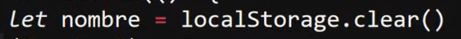
SessionStorage
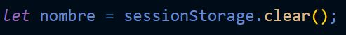
Nota: se puede observar el contenido de cualquiera de estas apis ya sea aplicando un "consol.log" a los objetos "sessionStorage" o "localStorage", así como tambien ingresando a las herramientas de desarrollador de google, a la sección de "Aplicación (Aplication)" y en el secmento llamado "almacenamiento(Storage)"
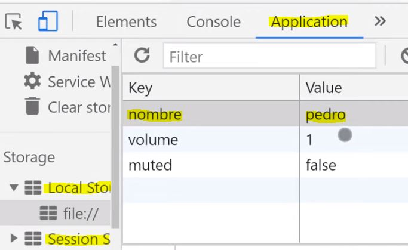
Este se trata de un manejo muy basico del "localStorage" y del "sessionStorage", los metodos y propiedades de estas van mucho más allá, para profundizar se puede ingresar en el apartado del LocalStorage y del SessionStorage de "developer mozilla".
Drag y Drop (Arrastrar y Soltar)
Esta "api" es la encargada de trabajar con la fución de arrastrar y soltar elementos, debido a que esta "api" tiene una estrecha realción con las interaccionnes del usuario, cuanta con multiples eventos que se aplicaran a los diferentes elementos involucrados.
Eventos del Objeto
Se trata de los eventos que se desencadenan al arrastrar un elemento, para esto es necesario que la acción se desencadene desde el contenido del elemento, no desde sus bordes, los eventos de este tipo son:
-
Gragstart: Este evento se dispara en el momentos en el que es "sujetado" el elemento en cuestión
Ejemplo
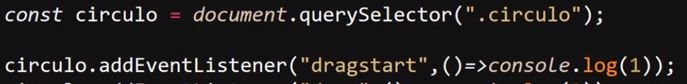
-
Drag: Este evento se dispara mientras un elemetos es sujetado
Ejemplo
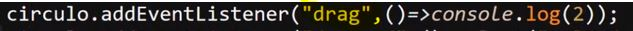
-
Dragend: Este ultimo evento se dispara en el momento en el que el objeto arrastrado es soltado
Ejemplo
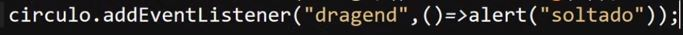
Eventos de Zona
Se tratan de los eventos que posee el objeto sobre el cua se esta desplazando el elemento arrastrado, estos eventos son:
-
Dragenter: Este evento se dispara en el momento en que el elemento arrastrado ingrese en el interior del elemento de fondo, en otras palabras el elemento de fondo persive cuando el elementos arrastrado entre dentro de su zona.
Ejemplo
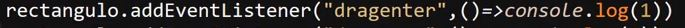
-
Dragmove: Este evento se dispra mientras el elemento este siendo arrastrado sobre la zona del el elemto de fondo,
Ejemplo
-
Drop:Este evento se dispara cuando el elemento arrastrado es soltado sobre el elemeto de fondo, sin embargo este evento cuenta conuna particularidad, este es que por defecto su ejecución se encuetra BLOQUEADA al menos que se indique lo contrario.
En otras palabras este evento solo se ejectuara sobre los eventos de fondo en los que se les indique que esto puede suceder, para definir esta "autorización" es necesario pasar un parametro (comunmente llamado "e") al evento "dragmove" y luego definir que NO se utilise la configuración por defecto
Por lo tanto la ejecución de este evento depende del evento "dragmove" ya que es este el que determina si el objeto se puede soltar en una sección, esto lo hace de la siguite forma:
Ejemplo
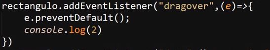
Ejemplo de Drop
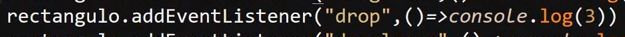
-
dragleave: Este evento se dispara en el momento en el que el objeto salga del elemento de fonod, en otras palabras el elemento de fondo detecta cuando el elemeto arrastrado deja de estar ubicado sobre este
Ejemplo
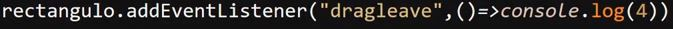
Propiedad DataTransfer
Se trata del objeto encargado de transferir datos entre los diferentes elementos, es decir este objeto es el encargado de inidcarle a los diferentes elementos de fondo que otro elementos se esta desplazando sobre ellos o indicar al elementos arrastrado que se esta desplazando por la paguina.
El funcionamiento de este objeto radica en eplicarlo dentro del evento "dragstart", y para acerlo es necesario proveer de un parametro (parametro "e") a la función de ejecución del evento, para poder hacer uso del objeto utilizando la propiedad ".dataTransfer", de la siguiete forma:
Ejemplo
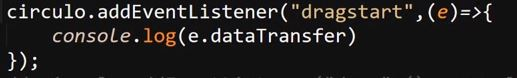
Resultado
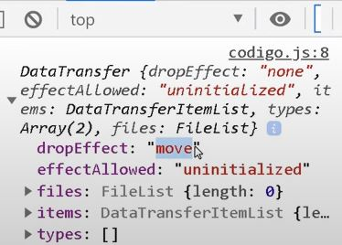
En este ejemplo se muestra el objeto "dataTransfer" en consola, lo cual permite ver todos sus datos, eventos y propiedades.
Este objeto en pocas palabras es compartido entre el elemento arrastrado y el elemento de fondo sobre el cual este se despalaza, para que el elemento arastrado comparta el objeto es necesario definir el elemento al que este pertenece así como el dato a ser compartido.
Esto se realiza aplicando el metodo ".dataTransfer" al parametro ingresado ("e"), luego se aplica el metodo ".setData" al cual se le indica el nombre del parametro entre comillas (" "), seguido del valor del parametro que se desea compartir en el objeto
Ejemplo
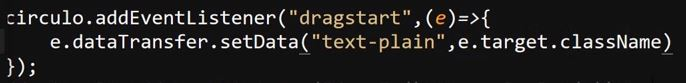
En este caso se usa el parametro "e" para acceder al objeto "dataTransfer", se usa el metodo setData en el cual se define el nombre del parametro a ingresar en el objeto, seguido del valor del parametro, en este caso se nombra como "text-plain" y se usa el parametro "e" con el metodo ".target.className" para aceder a la clase del elemento arrastrado y ingresarla en el objeto para ser compartida con los elemtos de fondo
Nota: Normalemte no se utiliza la clase para esto, ya que más de un objeto puede poseer una misma clase, lo más comun es que se utilise un "id", pero para fines del ejemplo se utiliza la clase.
Por otro lado para obtener el los datos se utiliza el metodo ".getData" el cual funciona casi del mismo modo que "setData", con la diferencia de que este unicamete necesita el nombre del parametro enviado en el objeto para acceder a este.
Ejemplo
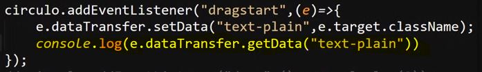
Por ultimo para obtener los datos desde otro lugar se recuerre al evento "drop", en el cual se utiliza el metodo ".getData" de la misma manera ya mostrada:
Ejemplo
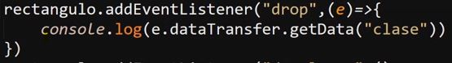
Geolocalization
Se trata de la "api" especializada en trabajar con la ubicacióndel dispositivo, para esto se accede al objeto "navigator" el cual es un objeto qie hace referencia al navegador y se desenglosara más adelenate, por ahora lo relevante consiste en la aplicación de esta "api".
Para hacer uso de esta en el objeto "navigator" se utiliza el objeto ".geolocation", este posee varios metodos creados espesificamente para gestiona los datos de la ubicación del dispositivo, estos metodos son:
-
GetCurrentPosition(): Este metodo requiere que se le ingrese al menos un parametro para funcionar, pero en si este puede recibir hasta tres de estos.
Una caracteristica curiosa de los parametros de este objeto es que estos requieren estar igualados a funciones para funcionar, esto debido a que desde estas funciones es donde se indica que acciones tomar al objeto, para esto los parametros se igualan a funciones flecha
Ejemplo
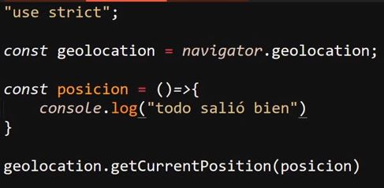
Resultado
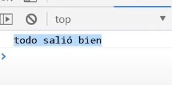
-
El primero de estos parametros hace referencia a la ubicación del dispositivo, debido a que este parametro de por si no retorna ningun valor se iguala este parametro a una función, y si a su ves se le envia el parametro "pos" a esta función interna se puede obtener la ubicación actual del dispositivo:
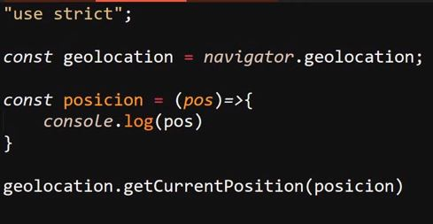
Resultado
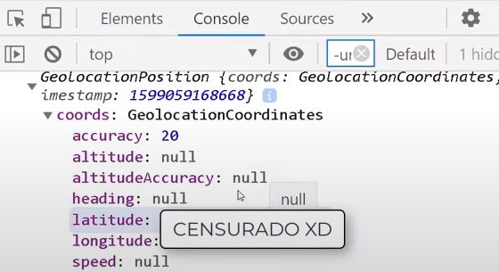
Por lo tanto es densde la función interna del parametro del objeto que se puede acceder a la ubicación, de hecho desde allì tambien se puede obtener la latitud y la longitud:
Latitud
Longitud
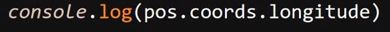
-
EL segundo parametro que recibe "GetCurrentPosition()" se refiere al error, esto debido a que existe la posibilidad de que ocurra algun error al tratar de obtener la ubicación del dispositivo, por lo tanto este parametro de igual forma se debe igualar a una función flecha la cual se encargara del manejo de los errores
Ejemplo
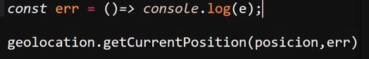
-
EL tercer y ultimo parametro se trata de "options" el cual se encarga de trabajar con las opciones, en este caso este parametro consistenen un objeto que almacena todas las opciones que se deseen incluir en la ubicación, entre estas opciones esta:
-
MaximunAge: Espesifica el numero de registro de la ubicación a obtener, en esta opción el valor "0" inica la ultima ubicación del disposotivo, es decir obtener la ubicación actual
-
Timeout: Esta opción define cuantos seguntos deben demorar en devolverse los datos, el valor de esta opción debe expresarse en milisegundos
-
EnableHightAccuracy: esta opción indica el si se deben utilizar todos los recursos de ubicación disponibles para obtener la mayor presición sobre la ubicación, esto se realiza aplicando el valor "true" en esta propiedad
Ejemplo
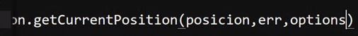
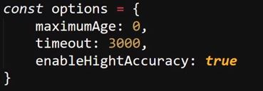
Resultado

-
WatchPosition(): Este metodo se encarga de hacer seguimiento de todos los cambios de ubicación, por lo tanto se encarga de seguir el dispositivo mientras este se enceutra en movimiento, tambien se podria decir que este metodo permite obtener la ubicación en tiempo real.
-
ClearWatch(): Este metodo permite borrar el historial de "watchPosition()"
historial
Esta "api" se basa en la utilización del objeto "history" el cual permite interactuar con los datos almacenados en este, para lo cual este cuanta con multiples metodos, los cuales son:
-
.Length: Este metodo retorna el tamaño del historia, en otras palabras, retorna el numero de registros que han sido almacenados en este, por ende esta propiedad revela el numero de paguinas almacenadas reciente a las que se puede acceder.
Ejemplo
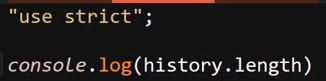
Nota: el valor de este metodo se puede apreciar imprimiendo el objeto desde consola no esnecesario aplicarlo para esto.
-
.Back( ): Este metodo retorna al usiario a la url anterior, en otras palabras su efecto es el mismo al de la flecha de "Regresar" del navegador
Ejemplo
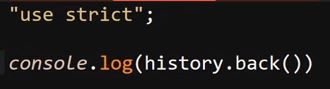
-
.Forward( ): Este metodo envia al usuario a la siguiete dirección url del historial, esto al menos que este se encuetre en la ultima dirección registrada, en otras palabras su efecto es el mismo que el de la flecha de "Adelante" del navegador
Ejemplo
-
.Go ( ): Este metodo permite definir algún registro del historial para el cual se desplazara al usuario, en función de cual sea el registro al que se desee redirigir al usuario este metodo puede recibir barios valores:
-
1: Este valor redirecciona al usuario hasta la dirección más reciente del historial, en el caso de que esta retorne un valor "undefined" se debe a que la dirección actual ya es la más reciente.
Ejemplo
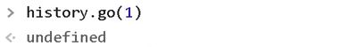
-
-1: Este valor redirige al usuario un url hacia atras en el historial, en otras palabras este valor hace la misma función que la prpiedad ".back( )"
h4>Ejemplo
-
0: Este valor al igual que dejar los parentesis bacios realizan el efecto de recargar la paguina actual
Ejemplo
-
.pushState( ): Este metodo permite modificar la url de la paguina actual,
-
Data: Se trata de los datos a enviar, estos pueden ser cualquier cosa en si, incluyendo un objeto o simplemente un nombre
-
Titulo: Se trata del nombre de la pestaña de la nueva dirección, por lo general no funciona, a su vez tampoco es un dato que se use frecuentemente, pero lo más recomendable es ingresar el valor como "vacio" ("")
-
Url: Se trata del tercer y ultimo dato, en el cual se añade la nueva dirección con la caracteristica de que el primer simbolo de esta siempre debe ser un signo de interrogación (?)
Ejemplo
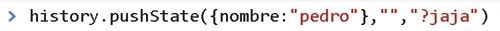
Resultado
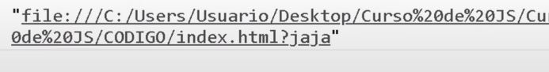
Este metodo al modificar la url lo que hace realmente es añadir los cambios como una nueva entrada en el historial, por lo tanto es posible usar los metodos "Go( )", "Forward( )" y "Back( )" para redirigirlo a este o de este
-
State: Esta propiedad permite obtener los datos enviados atravez de la url con el metodo "pushState( )"
Ejemplo
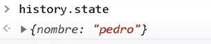
-
Evento Popstate: se trata de un evento especial que se dispara en el momento en el que el navegador detecta un dato enviado a travez de la url, para esto se utiliza un escuchador de eventos, pero sin ser vinculado con ningun elemento de la paguina, de ese modo por defecto se vinculara con el objeto "window", permientdole acceder a los archivos de la url:
Ejemplo
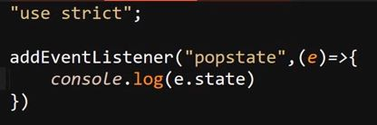
Resultado
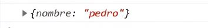
-
ReplaceState( ): se trata de un metodo muy similar a "pushState( )", tanto que incluso recibe los mismos parametros, con las diferencias de que este metodo no genera una entrada en el historial al modificar el url de la paguina, a su vez los datos enviados por este metodo tampoco seran detectados por la propiedad "state", de ese modo se podria decir que este metodo realiza el mismo efecto de que "pushState( )" pero sin dejar rastros
FileReader
Se trata de una "api" diseñada en espesifico para trabajar con la leectura de archivos,una caractertica de esta es que por lo general se suele ejecutar en conjunto de promesas o eventos, esta "api" trabaja en base al objeto FileReader, el cual permite trabajar con los datos enviado por el usuario, en otras palabras este objeto permite manipular los archivos que hayan sido enviados por los usuarios.
Para crear el objeto de esta "api" se utiliza el constructor "FileReider()":
Ejemplo
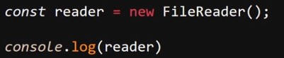
Este objeto al vicularse con un input de tipo "file" recibe el archivo enviado, para obtener dicho archivos se utiliza el evento "change", el cual detecta cuando un input cambia de valor, en este caso es necesario pasarle un dato ("e") a la función del escuchador de eventos, para que de ese modo se pueda almacenar el archivo enviado, si por otra parte se desea observar el archivo en cuestión, esto se puede hacer imprimiendo en consola el metodo ".file" el cual es un array que recibe todos los archivos que sean enviados atravez del input, de la siguiente forma:
Ejemplo
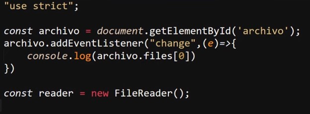
Resultado
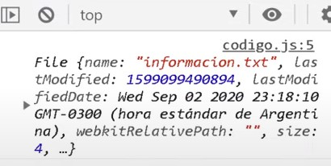
Obtener el contenido de un archivo
Por otra parte si lo que se quiere es manipular el archivo o leer su contenido se nesecita emplear la "api" "FileReader", más espesificamente al metodo ".readAsText", el cual permite leer el contenido de un archivo de tipo text.
En el siguite ejemplo se puede observar el como se vincula un input de tipo "file", se inicializa el evento "change" y se aplica la función "leerArchivo()" al archivo enviado por el usuario, esta función se iguala a una función flecha que recibe un dato ("ar") la cual creal el objeto "FileReader()" para finalmente utilizar su función "readAsText()", a la cual se le envia el archivo recibido por la función para de ese modo leer su contenido.
Ejemplo
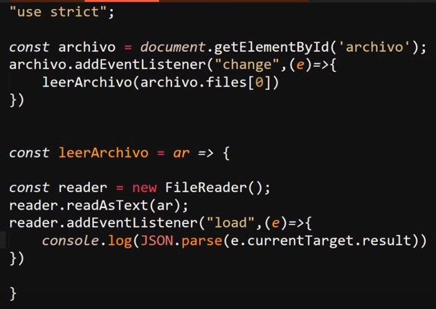
Por ultimo se inicializa un segundo escuchador de eventos con el evento "load" para determinar si la carga del archivo concluyo, si esto sucede se aplica una función flecha la cual convierte a JSON la cadena de texto obtenida del archivo, (esto ya que el archivo es de tipo text).
Nota: el resultado se encuetra en "e.currentTarget.result" ya que: el que se esta mostrando en pantalla no es directamete la "api" en si, debido a que se usa una función para convertir el dato en JSON, los datos de "reader" se envian a la variable "e", estos datos se almacenana en "currentTarget" (target actual), ya aquí dentro de los datos de la api se utiliza el metodo ".result" el cual contiene el contenido del archivo.
Resultado
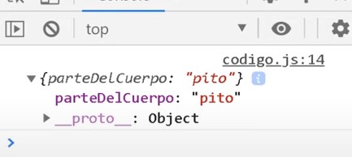
Nota: El contenido del archivo es un JSON en formato texto, y se utiliza la función flecha dentro de "leerArchivo()" para convertirlo a formato JSON y mmostrarlo en consola.
Otro ejemplo podria ser el como acceder al contenido de multiples archivos a la vez, esto es util debido a que en los input de tipo "file" es posible utilizar el atributo "multiple", el cual configura el input para que reciva X numero de archivos, para estos casos una buena forma de acceder a estos datos es atravez de un ciclo "for" para recorrer los elemtos del array "files", ya que en este se almacenaran todos los elemetos recibidos por el input.
Ejemplo
Resultado
Nota: Tener en cueta en este segundo ejemplo todo erray es eviado a la función, por lo tanto este se almacena en "ar".
ReadAsDataURL()
Se trata de un segundi metodo el cual permite obtener direcciones url validas que puedan ser utilizadas por el navegador, es decir este metodo en vez de obtener el texto del archivo, obtiene la dirección url de este, en si la forma de trabajar de este metodo es esactamente la misma que "readAsText" con la diferencia de que este metodo unicamente funciona para aquellos tipos de archivos que pueden ser operados usando url.
Ejemplo
En este ejemplo se tomo como base el codigo anterior, modificandolo para que trabaje en base a "ReadAsDataURL", debido a que este metodo retorna la ruta del elemento esta se almacena dentro de la variable "e" en la función flecha, más espesificamente en "e.currentTarget.result".
Resultado
Nota: Este no es verdaderamente un codigo funcional, en su lugar es un codigo explicatibo rapido, por lo que tiene varios aspectos mejorables, por ejmplo el constructor del elemtos HTML estaria fuera del bucle, a la vez que las imagnes se añadirian al interior de los elemetos despues de que el bucle culmine.
Nota: En este ejmplo el elemento "img" no es creado de forma correcta con "createElement" debido a esto no se generará un nodo de este elemento.
IndexedDB
Se trata de una api especializada en la interacción con bases de datos, de hecho "MongoDB" trabaja con esta api, su funcionamiento es mililar al de "localStorage" o "sessionStorage", ya que permite almacenar datos en el navegador, pero con grandes particularidades que la diferencian.
-
Esta api esta orientada a objetos, a su vez los datos de esta se basan en cadenas de "nombre/valor"
-
Es asincrona por lo que se puede acceder y manipular los datos sin la necesidad de recargar la paguina
-
Esta api trabaja con los eventos del "DOM", por lo que los resultados o respuestas estaran basados en estos eventos
Proceso de Creación
La primera acción a tomar para trabajar con esta api es alaborar una solicitud de creación de la base de datos, para esto existen cierta pauta, la cual consiste en que la constante donde se almacene esta solicitud debe llamarse "IDBRequest", esto ya que es el nombre designado para indicar que se trata de una base de datos "IndexedDB", por su puesto que es posible nombrar esta variable de cualquier otra forma, sin embargo se recomienda aplicar este nombre ya que se considera como buenas pracitcas.
Teniendo en cuenta este especto y accediendo al objeto "indexedDB" se utiliza el metodo ".open()", el cual permite aperturar (en caso de que exsista) o crear (en caso de que no exista) una base de datos, este meodo recibe dos datos para trabajar, el primero corresponde al nombre de la base de datos, minetras que el segundo define la verción de la base de datos.
Ejemplo
Nota: El definir la verción de la base de datos como "1" tan solo es con el proposito del ejemplo de la petición, este aspecto se desenglosara más ademlante.
Nota: Si la constante se nombra de la misma forma que "indexedDB" es necesario realizar la solicitud como "window.indexedDB" ya que de lo contrario javaScrip no ubica al objeto, en su lugar lo interpreta como un llamado a dicha constante :
Una vez realizado la solicitud para la base de datos con el metodo ".open( )" se procede a inicializar una serie escuchas de eventos, esto ya que algunos de estos se utilizan para definir que acción realizar en base a cual sea el resultado de la solicitud del metodo ".open", estos eventos son:
-
Success: Este evento determina si todo salio correctamente en la solicitud ".open( )"
Ejemplo
-
Error: Este evento se dispara en caso de que surja algun error al aceder a la base de datos
Ejemplo
-
Upgradeneeded: Se trata de un evento que se dispara en caso de que la base de datos no ha sido creada, por lo tanto se trata de una comprovación para evaliar la existencia de la base de datos
Ejemplo
EL siguiente se trata de un ejemplo de como se ejecutan los eventos "Success" y "Upgradeneeded" al crear u conectar con la base de datos usando el metodo ".open( )"
Ejemplo
Crear Almacen de Objetos
Un almacen de objetos es una arquietectura de almacenamiento de datos que se caracteriza por almacenar los datos como objetos a diferencia de otras metodologías, de esta forma es en la que trabaja la api "IndexedDB", "mongoDB" y otras bases de datos no relacionales, por lo tanto un almacen de objetos seria lo que es una tabla para una base de datos realacional.
Un aspecto sumamente importante de los almacenes de objetos es que estos solo pueden ser creados en el momento en que se crea la base de datos, razon por la cual la declaración de estos se debe realizar desde el evento "Upgradeneeded", ya que el codigo definido dentro de este evento se ejecutara en caso de que la base de datos no exista.
Para crear un almacen de objetos es necesario acceder a la base de datos, esto se hace acediendo al metodo ".result" de la solicitud, esto ya que en la constante "IDBRequest" (o cualquiera que sea como se nombre) no se almacena la base de datos en si, si no se almacena la solicitud hacia esta, en su lugar la la base de datos se obtiene como un resultado de esta solicitud, razon por la cual se utiliza el metodo ".result" para obtenerla.
Ejemplo
De esta forma se obtiene el acceso a la base de datos a la vez que se guardadentro de la variable "db", para crear el almacen de objetos en si, se utiliza la propiedad "createObjetStore( )" propiedad la cual recibe dos datos para funcionar, el primero corresponde al nombre del dato a almacenar mientras el segundo corresponde al "key" (identificador) que se aplicara a los objetos almacenados.
Ejemplo
En este caso (y en la mayoria) en el dato "key" del almacen de objetos se define "autoIncrement: true", esto siginifica que por cada objeto que se almacene el idice se incrementara, de esa forma no habra dos elemetos con el mismo identificador.
Nota: Una alternativa a "autoIncrement" es "Keypath", el cual es una opción con la misma función y con casi con el mismo funcionamieto, salvo por pequeñas diferencias en si aplicación, si se desea indagar sobre "Keypath" se recomienda buscar en google, ya que las diferencias son tan poccas que no se aborda este elemento en el curso.
Resultado
En este ejemplo se puede apreciar el como se usa las herramientas de desarrollador para observar el almacen de objetos recien generado por el codigo anterior, esto se hace desde la pestaña de "aplication", en la sección de "indexedDB".
Nota: es necesario hacer click derecho sobre la opción "indexedDB" para que esta herramienta se actualise y se muestre la base de datos.
Almacenar objetos
Lo primero a realizar para guardar un objeto en el almacen de datos es sin duda el crear el objeto en cuestión, para esto se utiliza las transacciones, las cuales son operaciones que se realizan en los almacenes de objetos (tablas), estas operaciones pueden ser añadir, modificar, eliminar, cualquier acción o operación se considera una transacción.
Ejemplo
En este ejmplo se puede apreciar como se crea una función para acceder a la base de datos al obtenerla desde el resultado de la solicitud realizada en la variable "db", luego se usa el metodo ".transaction" para aperturar una transacción en la base de datos, para esto es necesario añadir dos valores a la transacción, el primero corresponde al nombre del almacen de objetos (tabla) en la que se realizara, mientras que el segundo dato se trata del tipo de transacción a realizar, en este dato existen dos valores posibles:
-
ReadWrite: Este tipo de transacción permite modificar los objetos almacenados en el almacen, ya sea editar, añadir o elominar objetos de este
-
Readonly: Este tipo de transacción unicamente permite leer los objetos del almacen
finalmente para concluir con la apertura de la transacción se autoriza la ejecución de la transacción en el lugar indicado, esto se realiza con el metodo "objetStore", metodo al cual se le definie nuevamente el nombre de la tabla en la que se realizara la acción, de la siguite forma.
Ejemplo
De este forma la transacción finalmente se encuetra aperturada, y lista para ser declarada la acción a ejecutar, para añadir el objeto al almacen de objetos se utiliza el metodo ".add", metodo al que se le pasa el objeto en cuestión.
Ejemplo
De este modo la apertura de la transacción y el almacenaje del objeto se encuetran completos, este ejemplo se puede definir como:
-
La variable "db" obtiene la base de datos
-
La variable "IDBtransaction" apertura la transacción y define el almacen de objetos así como el tipo de transacción (readonly, readWrite)
-
La variable "objectStore" autoriza la acción en el lugar definido
-
Se usal el metodo ".add" en "objectStore" para añadir el elemeto a almcenar
Finalmente en este ejemplo se inicializa un ecucha de eventos para aplicar un mensaje en consola en caso de que la transacción se complete.
Resultado
Leer Objetos
Para toda interacción con la base de datos es necesario el aperturar una transacción, eso no excluye a las lectura de los elementos almacenados, por lo tanto la apertura de la transacción se realiza de la misma forma, con la unica diferencia de que el tipo de transacción se define como "readonly":
Ejemplo
Una vez la transacción ya se encuentra aperturada se utiliza el metodo ".openCursor()", el cual permite leer los datos almacenados en la base de datos, este metodo posse la particularidad de retornar una transacción, por lo cual tambien es necesario utilizar el metodo ".result" sobre este, ya que este ultimo metodo trabaja con generadores este retorna la función que lo ejecuta (literamente retorna el codigo de la función), Finalmente a este ultimo se aplica el metodo ".value" para finalmente acceder a los objetos almacenados en la base de datos.
Por lo tanto para acceder a los datos de la base de datos utilizando el metodo ".openCursor" se applica los metodos ".result" y ".value" a este, como de la siguite forma:
Ejemplo
En este ejemplo se utiliza el metodo ".openCursor()" para leer los elementos, se inicializa un escucha de eventos de tipo "success", para determinar si todo ocuarrio correctamente, de ser asi se usa un condicional "if" para validar que el metodo ".result" exista, de ser así imprime un valor de la base de datos en consola.
Nota: por defecto de esta forma se accede unicamente al primer dato, si se desea acceder a todos los datos del almacen de objetos se aplica el metodo ".continue()" al metodo ".result":
Ejemplo
Una particularidad del metodo ".openCursor" radica en que este metodo siempre se ejecutara al menos una vez de forma nula, esto ya que al llegar al ultimo indice del almacen de objetos este se encuetra bacio, ya que es el espacio designado para el proximo dato a ingresar, por lo tanto el este indice no contener aún un dato se vuelve nulo.
De ese modo se puede aprovechar esta caracteritica para ejecutar un codigo en particular cuado el metodo llegue a esta "ejecución nula", como en el siguite ejemplo, en el cual cuado se vuelve nulo se envia un mensaje por consola.
Modificar Elementos
Para esto se utiliza el metodo ".put()" el cual permite modificar un objeto existente en el almacen de objetos, a la vez que en caso de que este objeto no exista lo añade, el funcionamiento de este metodo es enormemente similar al de ".add".
Pese a su similitud el metodo ".put()" se diferencia del ".add()" en que este recibe no uno si no dos valores, los cuales corresponden al objeto y su key.
Ejemplo
Modificación
Resultado
De este simple modo se puede modificar los objetos almacenados en una base de datos, y si se da el caso de que el obejeto no exista este sera añadido.
Nota: recordar que para visualizar los cambios de la base de datos es necesario refrescar la herramienta de desarrollador tal como se resalta en el resultado del ejemplo.
Eliminar Elementos
Para esta ultima acción se utiliza el metodo ".delete", el cual se aplica igual que los metodos anteriores, con la diferencia de que este requiere que se indique el "key"(identificador) del objeto que sera eliminado.
Ejemplo